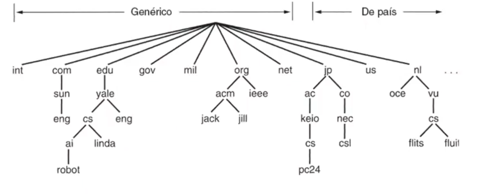
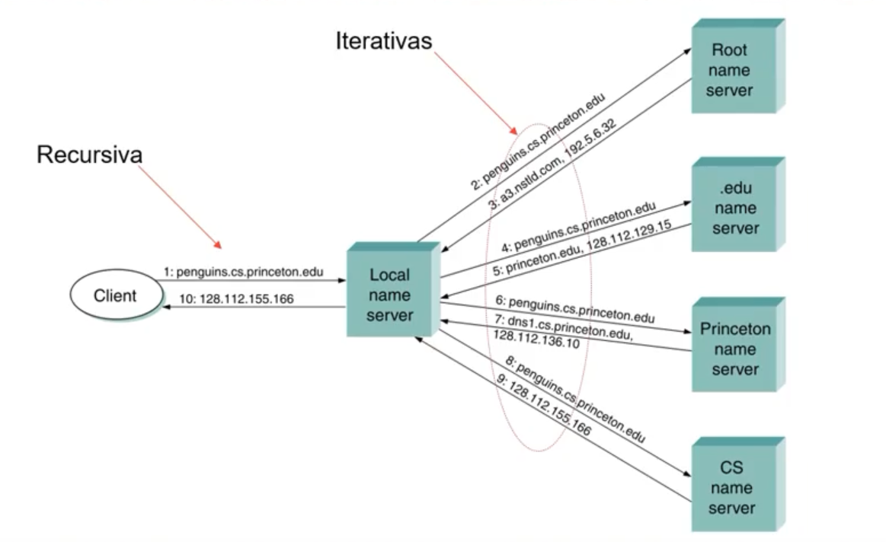
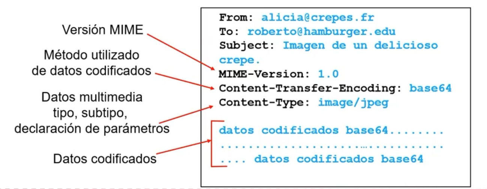
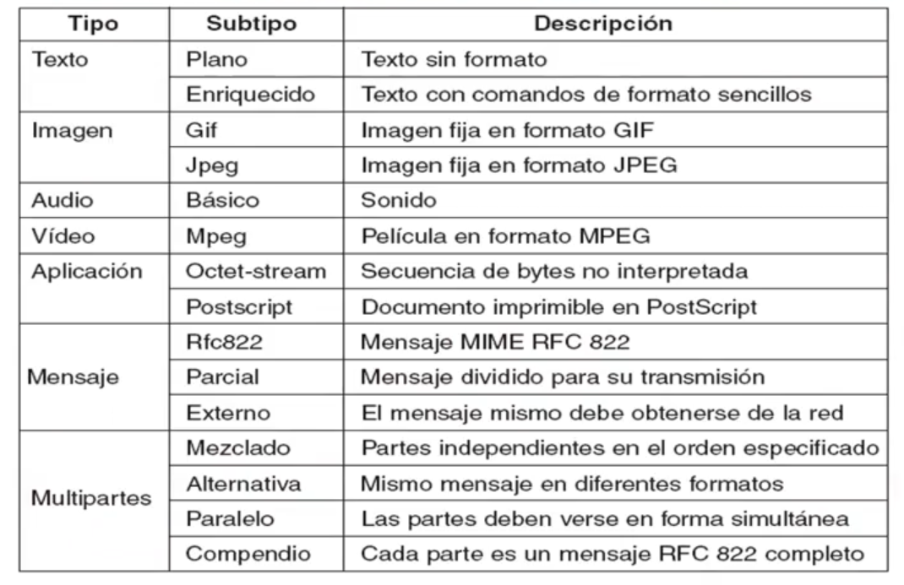
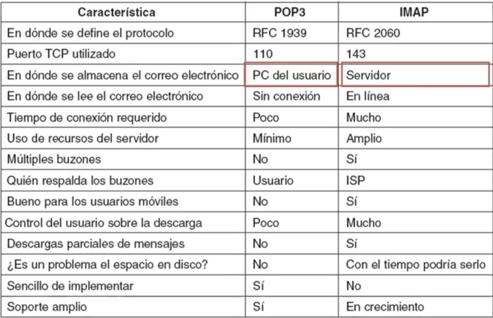
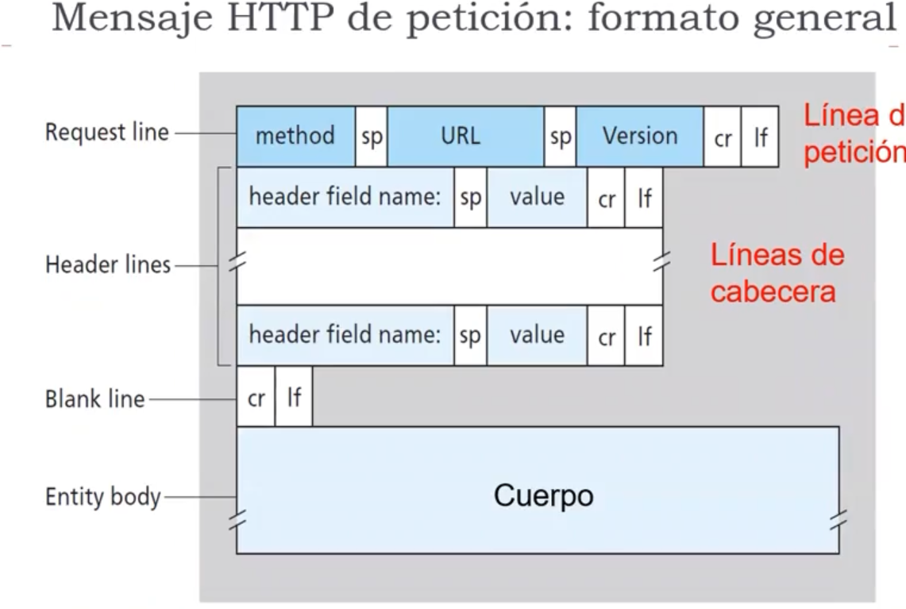
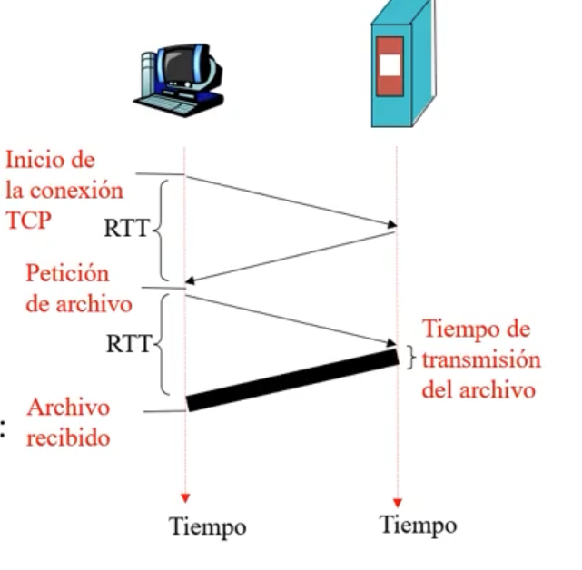

Unidad 8 - Nivel de Aplicación
Estimación (inchequeable): alrededor del 80% de los protocolos de la capa de aplicación están basados en el esquema cliente-servidor.
Acá vamos a hablar de DNS, SMTP, POP3, IMAP, HTTP. Pero en orden cronológico sería:
- SMTP
- DNS
- HTTP (acá más o menos estarían POP3 e IMAP)
- Visión: en general tenemos una parte de comunicación + procesos distribuidos.
- Los protocolos de la capa de aplicación definen los mensajes que se
intercambian los las apps.
- Uso de acciones ejecutadas por procesos en los hosts
- Uso de servicios de comunicación
- Usan el servicio de capas inferiores (en particular para transporte TCP y UDP)
- Ojo: 2 procesos en un mismo host usan IPC (Inter Process), mientras que 2 procesos en distintos hosts usan protocolos de la capa de aplicación.
Características de los protocolos de la capa de aplicación
- En gral. son mensajes de petición y respuesta que se intercambian
- Por lo general definidos en los RFC (Request For Comment)
- Estructura de Cliente Servidor, el cliente inicia la comunicación y asume que hay toda una infraestructura que lleva lo que envía a través de su socket hasta la salida del socket del servidor.
- Se impulsa normalizar APIs de comunicación
- facilita intercambiar una implementación por otra
- reduce costos
Servicios de los protocolos de transporte (Repaso)
TCP:
- orientado a conexión
- transporte fiable
- control de flujo
- control de congestión
- No proporciona: temporización
UDP:
- sin conexión
- fin de la lista(?)
Criterio para elegir el servicio de transporte
- Pérdida de datos
- algunas aplicaciones toleran pérdidas (ej: llamada de audio).
- oOtras como la transferencia de archivos requieren transferencia confiable>
- Temporización
- Algunas aplicaciones (como Telefonía en internet o juegos) requieren un delay artificial para eliminar el jitter.
- Ancho de banda
- Algunas aplicaciones requieren un ancho de banda mínimo (ej: streaming de video)
- Mientras que otras hacen uso del ancho de banda que tengan disponible (ej: cliente de email)
Algunas aplicaciones de internet
| Aplicación | Protocolo de capa de aplicación | Protocolo de transporte subyacente |
|---|---|---|
| Correo electrónico | SMTP (RFC 2821) | TCP |
| Acceso a terminales remotos | Telnet (RFC 854) | TCP |
| Web | HTTP (RFC 2616) | TCP |
| Transferencia de archivos | FTP (RFC 959) | TCP |
| Streaming multimedia | HTTP (Youtube, Netflix) | TCP o UDP |
| Telefonía internet | SIP (RFC 3261), RTP (RFC 3550) | UDP en gral, a veces TCP |
DNS (Domain Name System)
- aplicación que organiza máquinas dentro de dominios
- permite resolver un nombre de dominio en una dirección ip
- sistema distribuido escalable
- antes vos tenías un archivo de texto que tenía
<nombre_del_dominio> <dirección IP>.- De hecho sigue existiendo, es el de
/etc/hosts - Esto obviamente a la larga deja de escalar porque tengo miles y miles de hosts
- De hecho sigue existiendo, es el de
- definido en RFCs 1034/1035
- Tengo un resolver (que corre dentro del host) que recibe como parámetro el
nombre del host a buscar.
- El resolver envía un paquete UDP a un servidor DNS local, que busca el nombre y devuelve la dirección de IP al resolver y eventualmente se lo devuelve al solicitante.
- Hay un admin que maneja el servidor de DNS
- El namespace está organizado en dominios de nivel superior
- por país (jp, us, nl)
- genéricos (com, gov, org)
- En argentina tenés NIC.ar que administra todos los subdominios que están
bajo el dominio ar
- a los servidores de DNS que sirven estos nombres de dominio los llamamos autoritativos
- de .ar cuelga .uba 
- normalmente los DNS se dividen en zonas (que no se solapan)
- cada zona tiene un nameserver primario
- y algunos servidores secundarios que traen la data del primario, con motivos de redundancia y distribución de carga.
- cada zona tiene un nameserver primario
Formato del archivo DNS
- Tengo una dupla
(Nombre, TTL, Clase, Tipo, Valor) - El registro de tipo SOA indica el nombre de la fuente de info primaria de la zona de cobertura del servidor.
| Tipo | Significado | Valor |
|---|---|---|
| SOA | Inicio de autoridad | Parámetros de la zona |
| A | Dirección IP de un host | Entero de 32 bits |
| MX | Intercambio de correo | Prioridad, dominio dispuesto a aceptar correo electrónico |
| NS | Servidor de nombres (Name Server) | Nombre de un servidor para este dominio |
| CNAME | Nombre canónico | Nombre de dominio |
| PTR | puntero | Alias de una dirección IP |
| HINFO | Descripción del host | CPU y SO en ASCII |
| TXT | Texto | Texto ASCII no interpretado |
Tipos de consulta
El cliente hace una única consulta recursiva al Name Server local, el cual si no conoce la respuesta hará una o múltiples consultas iterativas a los distintos name servers. Notar cómo se procesa "de derecha a izquierda" cada uno de los dominios + subdominios:

Algo muy usual para los servidores locales guardan cachean las respuestas.
Otro detalle es que separamos las respuestas autoritativas de las no autoritativas. Las primeras son aquellas generadas por los servidores responsables de la zona, que mantienen ciertas garantías de confiabilidad sobre la respuesta.
Correo electrónico
Tengo 2 componentes principales:
- Los Agentes de usuario (User Agent): el lector de correo, que interactúa con su servidor correspondiente para el envío y recepción de mails. Se conecta con los servidores por medio de POP3 (Post Office Protocol) o IMAP
- Los servidores de correo: tienen
- un buzón de correo para almacenar los mensajes
- una cola de mensajes para la salida de los mensajes
- el protocolo SMTP se usa entre servidores de correo para intercambiar los mensajes de correo electrónico

SMTP
-
Está montado sobre TCP
-
Usa DNS para resolver nombres de dominios de los emails
-
Interacción basada en "pregunta (comandos) y respuesta (código de respuesta)"

-
Hereda en parte el formato de texto del mensaje del RFC 822 en el que se define:
- Header
- Para
- De
- Asunto
- Cc
- Bcc
- Received
- Return-Path (puede usarse para identificar una ruta de regreso al remitente)
- Date
- Reply-To: Dirección de correo a la que deben enviarse las contestaciones
- Message-ID
- In-Reply-To: Id del mensaje que se responde
- References
- Keywords
- Subject
- Body
- el "mensaje" en caracteres ascii
- Header
MIME, o cómo agregar gifs de gatitos al mail
- Objetivo: Quiero transmitir texto no plano (archivos binarios) por SMTP
- MIME: Extensiones de correo multimedia
- RFC 2045, 2056
- Antes de esto, si querían mandar fotos por mail tenían que encodearlas a base
64 y ahí mandarlo como ascii, y después desencodear.
- MIME automatiza este proceso agregando un par de lineas al header 
Formato:
Header
- MIME-Version
- Content-Description
- Content-Id
- Content-Transfer-Encoding: cómo se encodeó el mensaje para transmitir
- Content-Type: naturaleza del mensaje (ej: Content-Type: video/mpeg, el
tipo y subtipo se separa con una barra)
Hoy en día hay muchos Content-Type:

POP3 vs. IMAP
TLDR:
- POP3 almacena en la pc del usuario mientras que imap en el servidor (puedo leer offline, pero necesito mejor equipo y además no necesito mucho tiempo de conexión ya que tengo todo descargado de antemano)
- POP3 usa el puerto TCP 110 mientras que IMAP el 143
- POP3 está definido en el RFC 1939 e IMAP en el RFC 2060
- hoy en día es más común IMAP

HTTP
- Una página web tiene objetos (un archivo HTML, una imagen JPEG, un archivo de audio, etc.)
- Además una página web tiene un archivo HTML base que incluye objetos referenciados
- Cada objeto es addresseable por una URL compuesta por el nombre del host + nombre de la ruta al objeto
- El protocolo HTTP es lo que permite solicitar, recibir y descargar esos objetos
- De vuelta se repite el esquema Cliente-Servidor
- Es stateless
- Es "agnóstico" al OS o al navegador
- HTTP 1.0 definido en RFC 1945
- HTTP 1.1 definido en RFC 2068
Por abajo usa TCP:
- El cliente inicia la conexión en el puerto 80
- El servidor acepta la conexión
- Se intercambian mensajes HTTP entre el cliente y el servidor
- Se cierra la conexión
Formato General
- El body va encodeado usando algo similar a MIME
- En HTTP 1.0 tenía GET, POST, HEAD
- En HTTP 1.1 tenía GET, POST, HEAD y también PUT y DELETE
- La respuesta incluye un status code (200 OK, 404 NOT FOUND, etc.)

Modelando el tiempo de respuesta
Tengo 2 veces el RTT (para iniciar conexión y pedir el archivo) sumado al tiempo de transmisión del archivo.

- En la primer versión de HTTP las conexiones eran no persistentes. O sea que cada objeto abría una conexión HTTP (tengo el overhead de cada conexión TCP).
- En HTTP 1.1 se incluyó la conexión persistente en la que se arma una única conexión y ahí se piden todos los objetos.
CDN, o "bajemos el RTT con plata"
- La idea es tener un sistema de redirecciones
- Para redirigir una conexión al servidor geográficamente conveniente
- Le "dan los servidores" al ISP para sumar a su bbackbone
- Algunos: Akamai, Google (para evitar pagar fees de akamai), Amazon(arma AWS), Netflix(le "pide ayuda" a Amazon y crea OpenConnect, gran parte hosteado en AWS)
- Como la mayoría es "estático", replican en todos lados el contenido